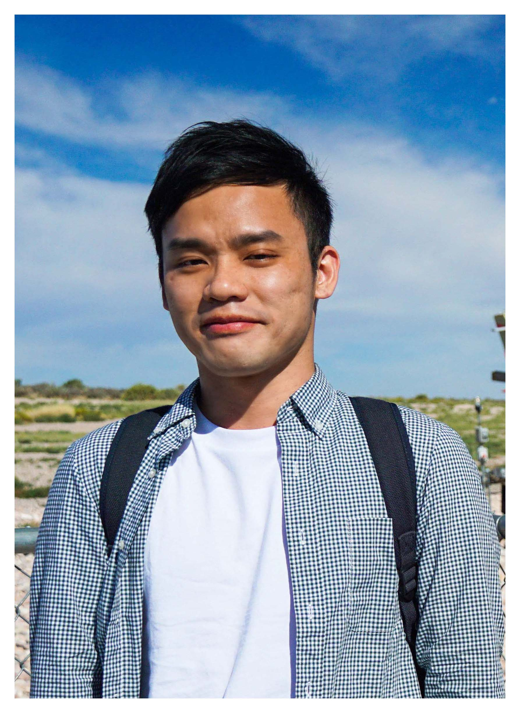

- Experience
-
新加坡商鈦坦科技股份有限公司台灣分公司 2018.12 - 2019.06
Product Developer 正職
ASP.NET、C#、SQL Server、Vue、React、HTML、TypeScript、CSS
- 維護 LINE Bot 的遊戲平台，開發 Line 群發功能，改善大量推送訊息時，CPU 滿載的問題。
- 開發及串接 API，使用 MVC 架構，並撰寫 Stored Procedure。
- 使用 NSubstitute 及 Entity Framework 撰寫單元測試與整合測試。
- 使用 Jenkins 建立自動化建置與部署流程。
- 於 Docker 建立影像串流 Server，並部署至 Kubernetes，實現自動擴展功能。
國立中山大學奈米科技研發中心 2017.07 - 2018.06
網頁全端工程師 個人接案
ASP、VB.NET、PHP、MySQL、SQL Server
- 負責奈米中心、貴儀中心及奈米核心設施的網頁系統全端維護與開發。
- 由於前工程師已離職一段時間，且無留下相關文件，因此在無人交接的情況下自行摸索系統的功能及架構，並撰寫整理相關文件。
- 替貴儀中心開發「月報表自動化輸出作業」，簡化每個月繁瑣的人工統計流程。
國立中山大學化學系 2017.07 - 2017.12
軟體工程師 個人接案
C#、PHP、MySQL
- 獨立開發「儀器預約系統」及「儀器計時收費軟體」。
- 開發「碩甄簡報上傳系統」，取代以Email逐一審閱資料的方式，簡化推甄流程。
皚霖資訊 2016.02 - 2016.06
軟體工程師 實習
ASP.NET、C#、SQL Server、Crystal Report、Visio
- 負責「報名系統」專案的全端維護與開發，從一開始的專案規劃、開發時程預估、分工、資料表設計及正規化，再來每週和主管開會討論，並直接與客戶對談了解其需求，到最後的撰寫使用手冊、成果驗收，是在學期間做過最完整的專案經驗。
- 使用「CKEditor」、「NPOI」、「Google URL Shotener API」等套件。
- 負責「行政院農糧署糧政系統」的翻新，由於舊系統是以PowerBuilder開發，且無相關文件，因此當時只能看舊系統的程式碼來推測程式邏輯，自行撰寫文件後，再以ASP.NET來開發新系統。
- Education
-
國立中山大學 資訊工程學系 碩士 (資料庫系統實驗室) 2016 - 2018
- 106-2 擔任資料庫系統助教
- 106-1 擔任網際網路資料庫助教
逢甲大學 資訊工程學系 學士 2012 - 2016
- 104學年度逢甲大學資訊電機學院畢業專題競賽資訊組第三名
- 104年通過「科技部大專生研究計畫」申請案 (相片電影之協作拼貼系統)
- 104-1 精勤獎學金(全班第三名)
- 103-2 精勤獎學金(全班第二名)
- 103-1 精勤獎學金(全班第二名)
- 102-2 精勤獎學金(全班第三名)
- 102-1 全班成績最優獎學金
- 102年擔任系上「程式設計隊」負責人（學習程式語言及交流的社團）
- 101-2 精勤獎學金(全班第二名)
- 101-1 全班成績最優獎學金
- HonorsandCertifications
-
- 2016.01 企業電子化軟體應用師檢定(ERP軟體應用-配銷模組(鼎新))
- 2015.06 第39次ITSA線上程式設計競賽 績優團隊
- 2015.06 Microsoft (Certiport) Office PowerPoint 2010
- 2015.06 Microsoft (Certiport) Office Word 2010 Expert
- 2015.05 CPE大學程式能力檢定 進階級(排名比例:7.1%)
- 2015.02 TQC+程式語言-專業級(C)
- 2013.12 CPE大學程式能力檢定 進階級(排名比例:14%)
- Thesis
-
ICQ-Tree: An Inverted Code Quadtree for the Top-K Spatial Keyword Query over the Incremental Database 2018.07
- 處理空間資料的困難點在於空間物件沒有Total Order，因此必須設計空間資料庫來做為物件的索引，我將以往分開處理的空間及關鍵字索引結合，並改善Inverted Index，達到更有效率的搜尋演算法。
- Projects
-
相片電影之協作拼貼系統 2015.02 - 2016.02
Android(JAVA)、PHP、MySQL
- 負責「相片電影」功能開發，將相片透過FFmpeg製作成電影回憶錄，並可錄製語音留言於每張相片，再結合拼貼的功能，讓整個相片電影更加生動有趣。
- 負責「相片協作」功能開發，可以依據權限，進行相片上傳、共享等操作。這部分我用了Glide套件來實現相片牆的載入，並用Volley套件來處理網路異步請求。
- 介面採用Material Design，並以Github作為版本控管工具。